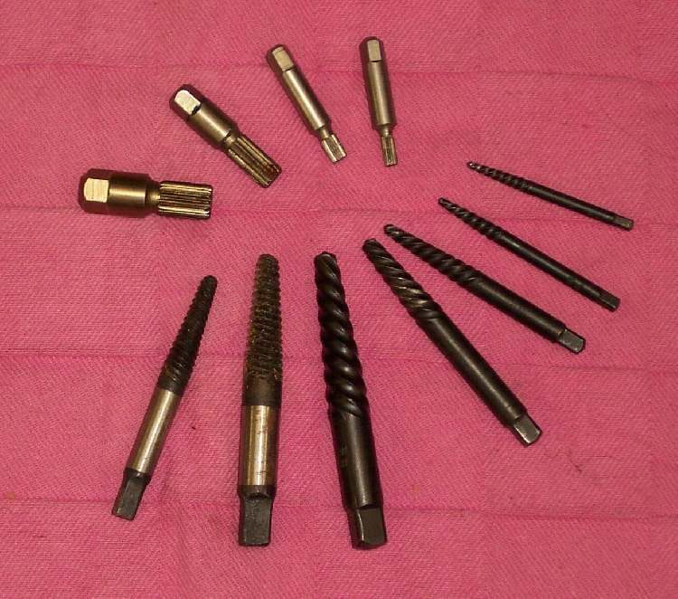
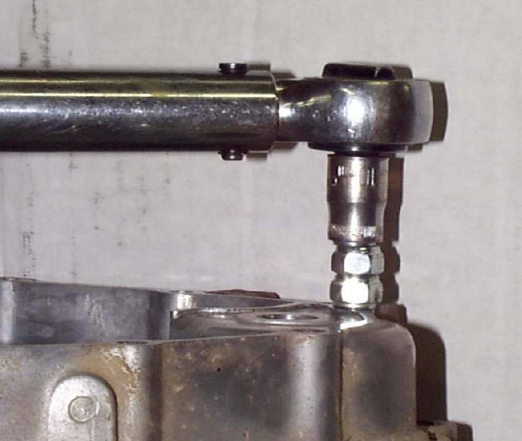

Torque is the twisting force on a fastener. Too little and the part works loose. Too much and the thread strips or the bolt stretches. A torque wrench lets you tighten to the value the maker states. Use it for engine, brake, wheel, suspension and steering fasteners.
Safety
- Wrong torque on a wheel axle, brake caliper bolt or steering part can cause a crash.
- Do not use the torque wrench to loosen fasteners. It is a measuring tool and is damaged by hard use.
You need
- A torque wrench whose range includes your value. Bike work needs a small drive for light fasteners and a larger drive for axles and engine mounts, if you can have both.
- Sockets and extensions that fit well.
- The torque value for each fastener, from your bike's manual. If you do not have it, get it before tightening. Do not guess.
Steps
- Read the value and the unit (N·m, kgf·m or lbf·ft) in the manual. Set the wrench to the same unit.
- Clean the thread and the seat. Fit by hand first, so you know the thread is not crossed.
- Fit the correct socket. Keep the socket square on the head.
- Set the wrench to the value. Check the setting scale.
- Pull in one smooth movement, with your hand at the centre of the handle. Stop at the click or signal. Do not pull again after the click.
- For parts with several bolts, tighten each a little at a time in the order the manual gives (often a cross pattern), then to the full value.
- Wheel axle nuts that use a split pin: tighten, then fit a new split pin.
- After use, wind a click-type wrench back to its lowest setting before storing. Keep it in its case.
Check your work
- Each fastener clicked at the right value and no thread is damaged.
- A paint line across the bolt and part shows later if the fastener has moved.
If it did not fix the problem
- A bolt keeps loosening: check the thread and seat, and look for a missing washer or thread lock called for in the manual.
- Engine mounting bolts: Check engine mounting bolts.